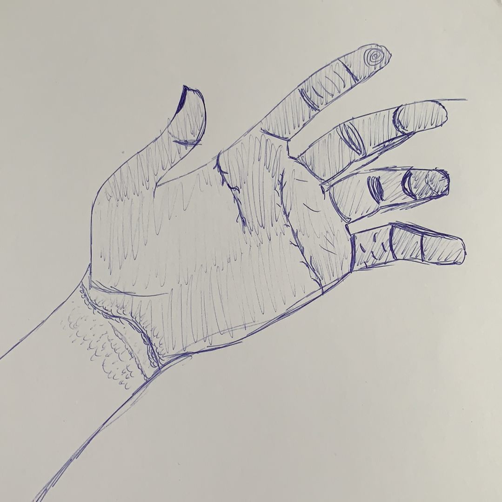
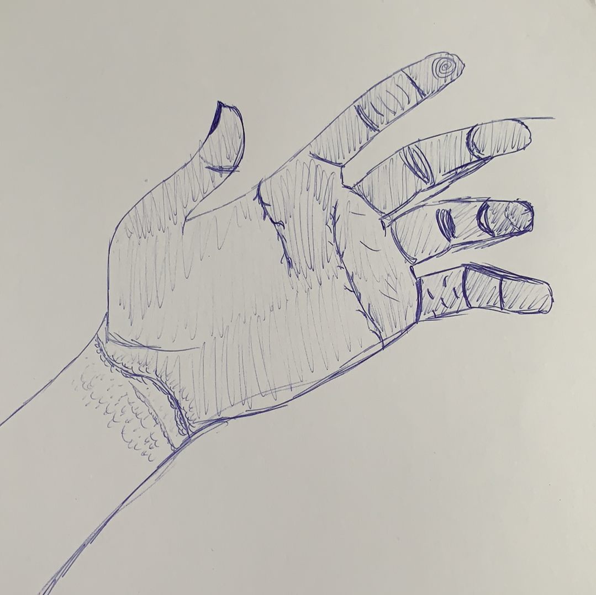

Rasmus Pedersen

Designs
I have a lot of experience in many different styles of designing, which includes 3D modelling, digital art, and the normal physical pen and paper.
I have made a bit of 3D modelling, which can be seen on the first picture. Here you can see a companion cube, which is from the Portal series. I made this one myself, using the program Blender.
I also have a fair bit of experience in digital art, where I have drawn the interesting looking wolf with cyan colored fur.
As for my standard and most favored way, is the hand drawn. I have chosen a couple of different things to include, which are some hands, eyes and a Caterpie from the Pokemon series.
The eyes are similar, but still drawn in a bit different way, where some have more details concerning the shadows. The hands are heavier on the structure of the hand itself.
At last, I have chosen the Caterpie as it uses a lot of rounded shapes, which can be tricky to draw correctly.

 
